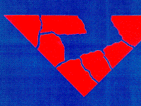
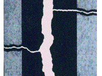
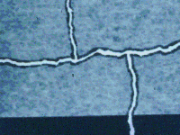
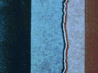
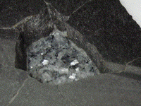
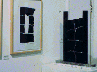

| Nathaniel Friedman is a mathematician specializing in
ergodic theory, and is also a scupltor. |
| In addition, since the early 1990s he has run a very successful
annual conference on Art and Mathematics, and he is the director of the
International Society of the Arts, Mathematics, and Architecture
http://math.albany.edu/isama/. |
| One of Friedman's techniques
involves fracturing slabs of granite, creating natural fractal boundaries.
|
| Friedman also uses these sculptures to make prints. |
| Here is his description of the process. |
| Fractal Stone Prints |
| Nathaniel Friedman |
| artmath@csc.albany.edu |
| For me, the major development in twentieth century sculpture was the
opening up of the solid form and the creation of space as in the work of
Barbara Hepworth and Henry Moore. I generally begin a sculpture by carving
out a space. Like most sculptors, I accidently discovered that a shortcut to
forming space was to break a stone and then separate the pieces to form a
space. One then has the natural fractal geometry of the broken stone. Benoit
Mandelbrot told me "that the word fractal came from fracture, as in the edge
of broken granite, rather then from fraction as some people think." This
statement definitely influenced me since I had been working with broken
granite and was led to a technique for making prints. I begin with a planar
shape of one-inch thick polished granite. On the rough side I draw a pattern of
straight lines along which I tap with a chisel to split the granite along the
lines. This results in a fractal division of the planar shape into several
pieces. I separate them to form space between pieces and I may also remove
some pieces to form spaces. Black ink is rolled on the polished surface of the
stones and a sheet of thin Japanese paper is placed on the inked stones. When
pressure is applied with a barren, the ink permeates the paper. The lower
surface of the paper on the stones has a solid black image, which was the
original intent. It came as a surprise that the ink permeating the paper
produced an interesting "grey-black" image on the upper surface that is visible
when the print is being made. By applying pressure with a burnishing tool along
the broken edges, these fractal edges show up as black on the upper surface
due to the ink permeating the upper surface of the paper. Thus one actually
obtains a two-sided print, where the lower side is black and the upper side
is a grey-black monoprint controlled by the pressure of the barren and the
burnishing tool. One can also fold one side onto the other to obtain an image
combining both sides. One can also use colored inks, which has opened up
many more possibilities. |
|
| Here are four prints, a sculpture, and a picture of a sculpture and
two prints made from it. Click each picture to enlarge in a new window.
|
|
 |
 |
 |
| Dancers |
Rivers and Streams |
Cliff Face |
|
 |
 |
 |
| Flamenco |
a pond |
a fractal sculpture and print pair |
|
I consider the fractal geometry of broken granite to be a
visually exciting
geometry in contrast to straight line Euclidean geometry. I have control
over the pattern of straight lines that I draw on the back of the stone
along which I tap with a chisel to break the stone. However, I have no
control over the way the stone breaks to form natural fractals, which
introduces a certain randomness. In a print such as River and Streams,
I call attention to the fact that the fractal geometry of broken granite and
the fractal geometry of rivers and streams is the same. In the print the river
is represented by the wider spacing of the stones and the streams correspond
to the narrow spacing. Part of the process is selecting appropriate spacings.
In some prints I just like working with the natural fractal geometry for
its own sake without any underlying meaning.
I have also made some abstract fractal torsos that are
done by breaking a
stone, removing some inner pieces, and then reassembling the remaining pieces.
Here the fractal geometry reflects the psychological process of coming apart
and putting yourself back together. The inner space may have a positive or
negative interpretation. It could represent getting rid of something that
bothered you or it could represent the loss of someone. In any case, only
fractal geometry can convey this psychological process of breaking apart.
Here is where fractal geometry reflects nature in psychology. |
|